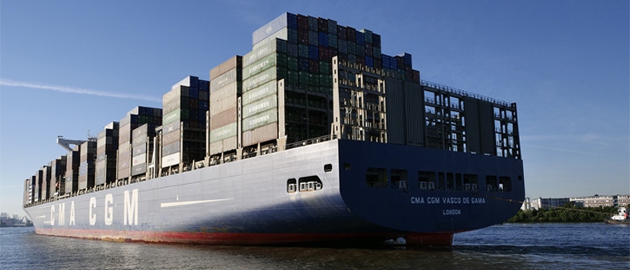
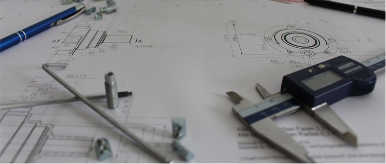
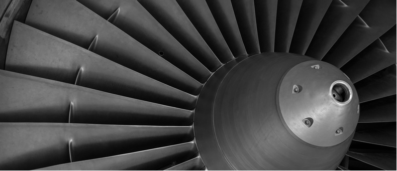

> 회사소개 > 기업정보
기업정보
조선해양산업의미래
삼성중공업은 조선·해양 사업분야에서 세계 최고를 지향하며 다양한 프로젝트를 성공적으로 수행해 왔습니다.
-

- 고부가가치선 분야에서
세계최고를 지향 - 1974년 창업 이후 2021년 12월까지 세계 유수의 선사로부터 선박과 해양설비 1,364척을 수주해 그 중 1,220척을 성공적으로 인도한 삼성중공업은 첨단기술, 생산효율, 고부가가치선 분야에서 세계최고를 지향하며 독보적인 사업 경쟁력을 갖추고 있습니다.
- 고부가가치선 분야에서
-

- 지식 기반의
복합 엔지니어링 사업 - 조선해양산업은 지식 기반의 복합 엔지니어링 사업으로서 다른 산업과의 연계 및 기술 파급효과가 클 뿐 아니라 기술, 자본, 노동이 집약적으로 투입되는 산업으로, 높은 기술 수준과 대규모 자본, 우수한 노동력을 필요로 합니다.
- 지식 기반의
-

- 차별화된 기술 경쟁력과
설계 시공 능력 - 조선해양사업은 전 세계가 단일 시장을 형성하고 있으며, 선주로부터 고가의 선박을 미리 주문 받아 생산하는 대표적 수주 산업입니다. 삼성중공업은 기술개발 및 고객만족을 통해 경쟁력을 확보하고, 신규시장을 개척하는 등 다양한 노력을 기울이고 있습니다.
- 차별화된 기술 경쟁력과
기업개요
-
회사명
(주)삼성중공업
-
대표이사
정진택
-
창립일
1974.8.5
-
임직원
9886명
-
자본금
3,150,574 백만원
-
매출액
6,860,318 백만원